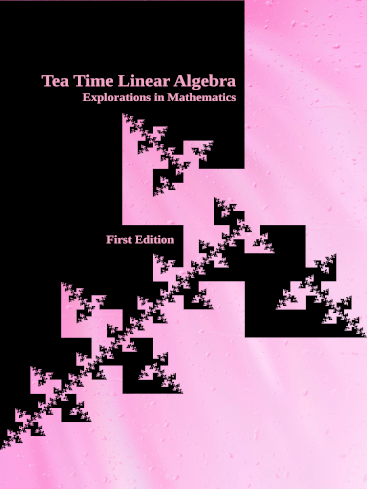

Website Under Construction The electonic first edition is complete! Download a preview by clicking the "Download PDF" button above. Print-on-demand links and the remainder of this website will be added soon!
Table of Contents Ancillaries Printed Copy Errata More Info

Greetings! And thanks for visiting.
This textbook is an open source introductory Linear Algebra textbook for instructors and students of mathematics. The ultimate goal of Tea Time Linear Algebra is to be a complete, one-semester, single-pdf, downloadable textbook designed for mathematics classes.
- 432 pages
- Over 1000 exercises with over 200 detailed solutions and hundreds more answers
- Over 250 illustrations
- Nearly 150 live SageMathCell links
- Open source
See reviews:
Reviews will appear here when available.